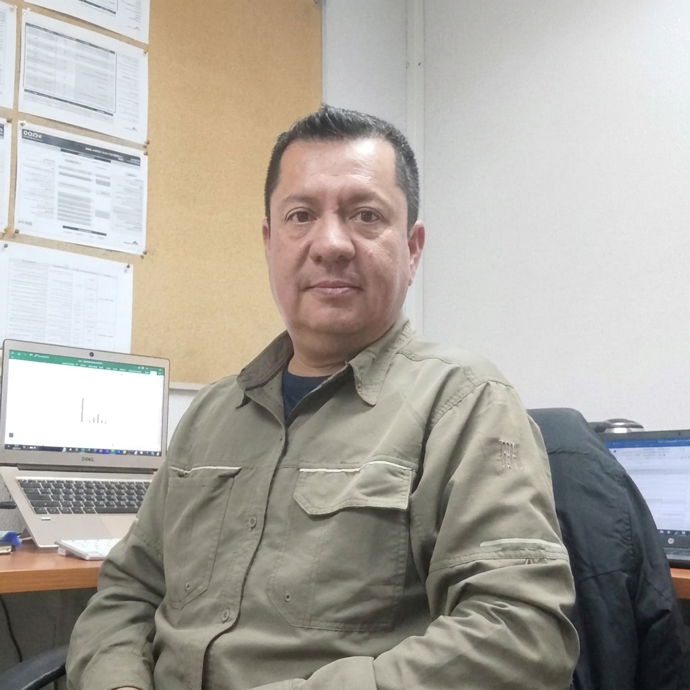
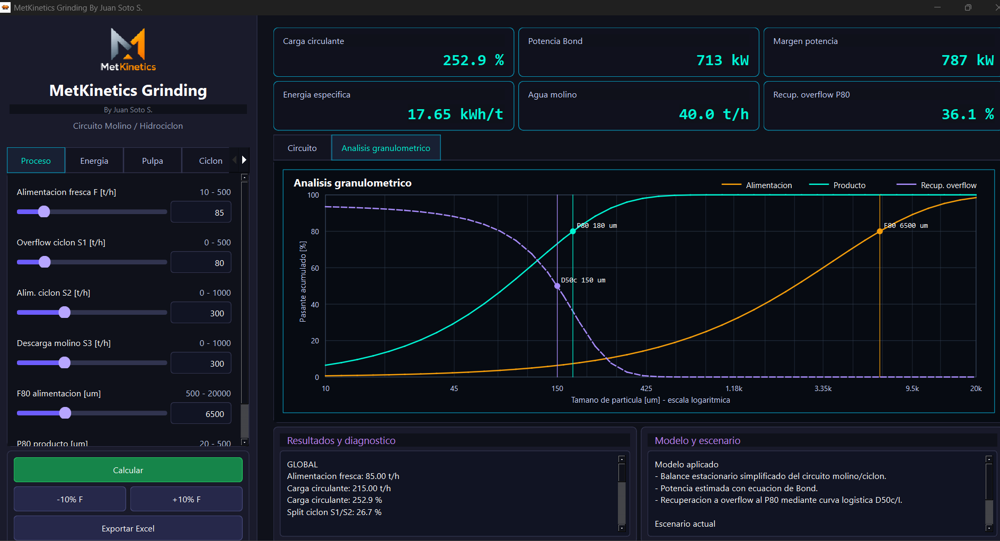
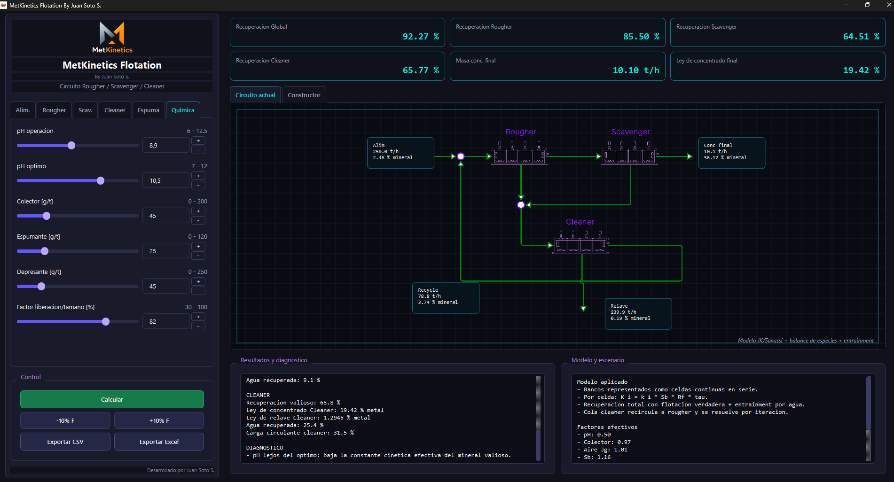
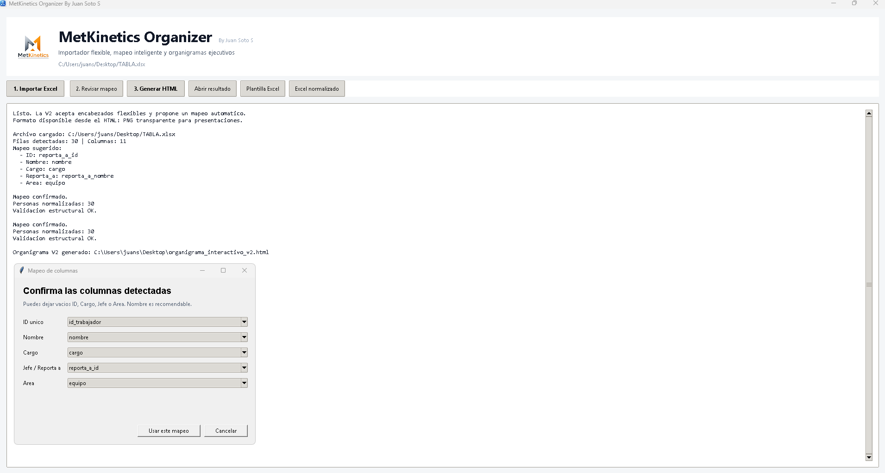
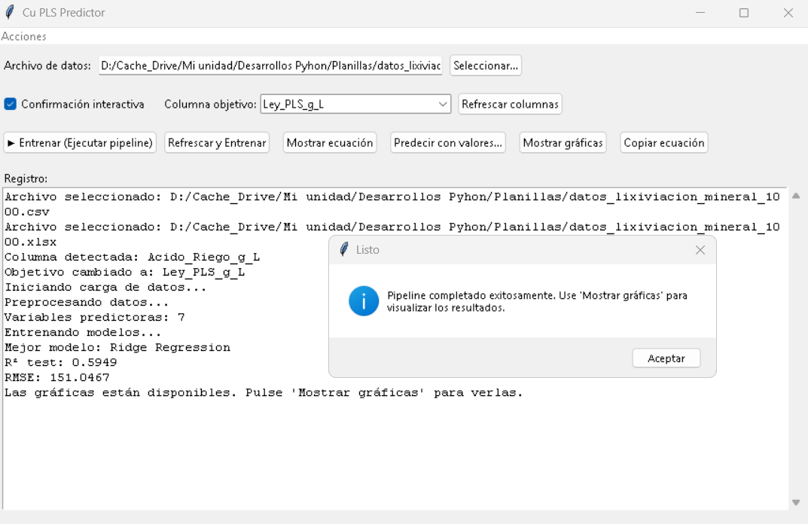
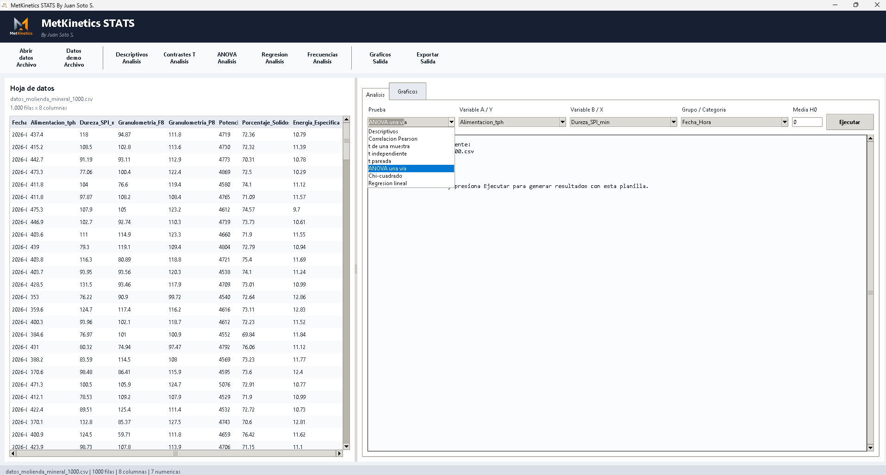
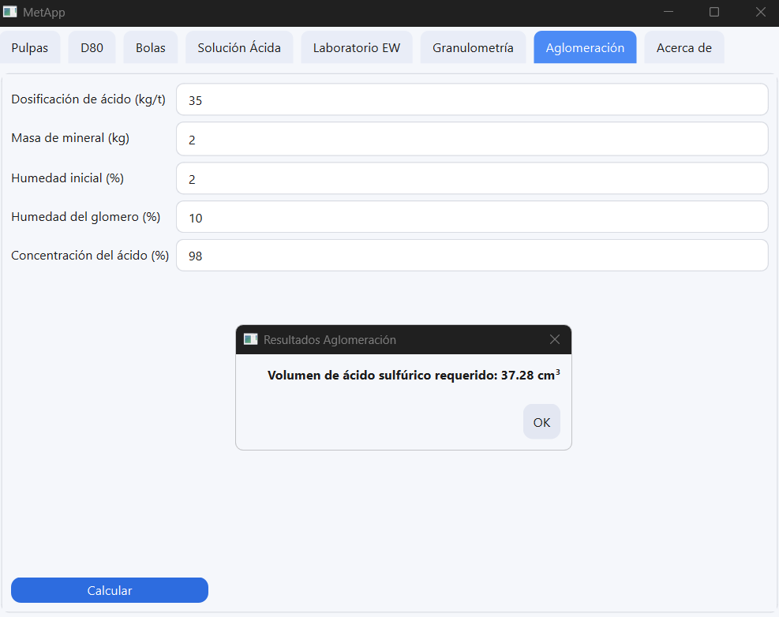
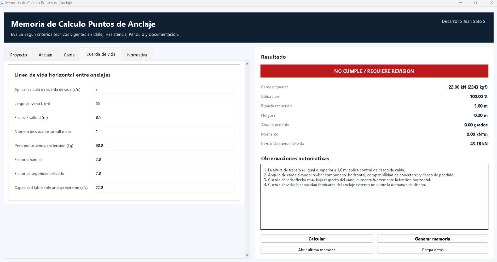

Jefe de Operaciones LX/SX/EW · Report Minería
Planificación con cliente, control operacional, cumplimiento de metas y coordinación de equipos multidisciplinarios.
Marca personal asociada a MetKinetics
24 años de experiencia en operaciones mineras, metalurgia, capacitación técnica y desarrollo de herramientas digitales para procesos industriales.

Perfil ejecutivo
Líder metalurgista con experiencia integral en operación, laboratorio e I+D. Experto en control de plantas concentradoras e hidrometalurgia, pilotaje y formación técnica minera.
Integra conocimiento de procesos, gestión operativa y desarrollo de software para crear soluciones aplicadas a continuidad operacional, análisis de datos y optimización de procesos.
Trayectoria
Planificación con cliente, control operacional, cumplimiento de metas y coordinación de equipos multidisciplinarios.
Puesta en marcha del servicio, logística segura hacia Collahuasi y soporte técnico en preparación de lechada de cal.
Responsable de metalurgia, evaluación de plantas y gestión de negocios mineros.
Fundador de startup de software industrial y desarrollo de simuladores de alta fidelidad para minería y seguridad.
Formación de ingenieros, técnicos y operadores en procesos metalúrgicos, hidrometalurgia y procesamiento de minerales.
Ingeniería de proyectos, metalurgia de proyectos, supervisión SX/EW y jefatura de turno.
MetKinetics Lab
Portafolio aplicado a procesos metalúrgicos, simulación, análisis estadístico, organización empresarial y memorias técnicas.

Simulación de molienda y clasificación, balances de masa, energía, granulometría y búsqueda de objetivos.

Modelamiento y visualización de circuitos de flotación con resultados en tiempo real.

Organigrama interactivo y gestión visual de estructuras internas desde datos tabulados.

Modelos predictivos, bootstrapping y validación estadística aplicada a variables de proceso.

Herramientas de análisis, comparación de variables, visualización y soporte a toma de decisiones.

Gestión y cálculo de variables de laboratorio para apoyo operacional y control de procesos.

Herramienta técnica para documentación, cálculos y trazabilidad de memorias de ingeniería.
Competencias
Molienda, flotación, lixiviación, SX/EW, balances metalúrgicos, pilotaje y control operacional.
Liderazgo de equipos, planificación, continuidad operacional, seguridad y gestión de contratos.
Python, Excel avanzado, Power BI, Data Studio, VS Code, simulación y automatización de reportes.
Estadística, Minitab, Statsmodels, modelos predictivos, análisis de tendencias y optimización.
Contacto